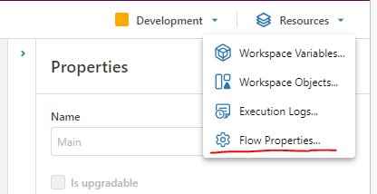
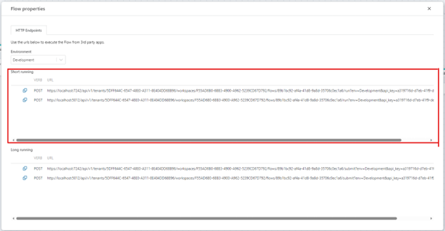
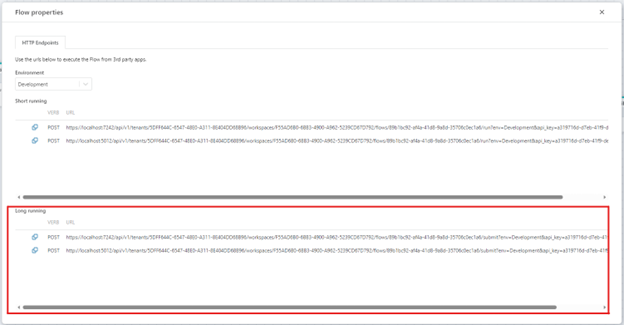

Running Flows from 3rd party applications
A Flow can be executed as an HTTP API, which makes it easy to integrate into custom apps or scripts.
To run a Flow from a 3rd party application, you must use one of the API endpoints of the Flow. You can find the API endpoints of a Flow in the Resources -> Flow Properties window, or you can add an HTTP trigger to the Flow.
Note
To run a Flow from a 3rd party application or client, you must configure at least one API key at the tenant level.

Execute short-running Flows
To execute a short-running Flow, use the Short-running HTTP API endpoint. The API will return when the Flow has completed executing. If the Flow is configured to return a value, object or a file, you can read the result from the HTTP response body. For non-binary data, data is returned as JSON. The format is defined by the data type of the value that the Flow is configured to return from its Return action.

Execute long-running Flows
To execute a long-running Flow, use the Long-running HTTP API endpoint. The API will return a job id that you must use to start polling for completion. Once the Flow has completed, you can fetch the result that the Flow might have produced by either calling another (short-running) Flow, or use a custom API (for example a call directly to a database).
